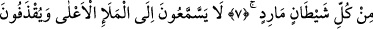

BİZ YAKIN GÖĞÜ
YILDIZLARLA SÜSLEDİK
Bismillâhirrahmânirrahîm
1, 2, 3, 4. Saf saf dizilmişlere, toplayıp sürenlere, zikir okuyanlara yemin ederim
ki, ilâhınız birdir.
5. O, hem göklerin, yerin ve ikisi arasındakilerin Rabbi, hem de doğuların
Rabbidir.
6. Biz yakın göğü, bir süsle, yıldızlarla süsledik.
7. Ve (gökyüzünü) itaat dışına çıkan her şeytandan koruduk.
8. Onlar, artık mele-i a’lâ’ya (yüce topluluğa) kulak veremezler. Her taraftan
taşlanırlar.
9. Kovulup atılırlar. Ve onlar için sürekli bir azap vardır.
10. Ancak (meleklerin konuşmalarından) bir söz kapan olursa, onu da delip
geçen bir parlak ışık takip eder.
“Saf saf dizilmişlere” Burada “ ” yemin içindir. “
” kelimesi, “
”
kelimesinin çoğuludur. Saf tutmuş olan topluluk; “
” ise saf tutan topluluklar,
demektir. Şayet burada ve bundan sonraki âyetlerde müzekker olarak “
”
denilseydi, topluluklara ihtimali olmazdı. Saf yapmak, insanlar yahut ağaçlar gibi
herhangi bir şeyi doğru ve düz bir çizgi üzere tanzim ve tertip etmektir.
İnsanları namaz kılmaları yahut harp yapmaları için doğru ve düz bir hat ve çizgi
üzere ikâme ettiğin zaman “
” yani “ben insanları saf yaptım; onlarda saf
tuttular” dersin. Allah Teâlâ, âyette ibadet için semada saf tutup kenetlenen meleklere